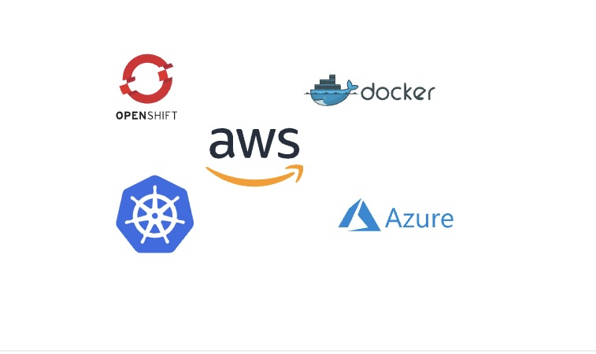
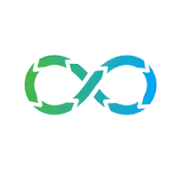

Expertise
Advanced capabilities.
Comprehensive technical expertise across modern infrastructure, automation tools, and cloud platforms.
Infrastructure & Automation
Linux servers, Shell scripting, Python automation, Ansible, Terraform, and Rundeck for streamlined operations.

Cloud & Containers
AWS, Azure, Docker, Kubernetes, OpenShift for scalable and resilient cloud-native solutions.
Monitoring & Observability
Prometheus, Grafana, Dynatrace, ELK Stack, Splunk for comprehensive system visibility and performance tracking.

DevOps & CI/CD
Jenkins, Git, GitLab, Helm for continuous integration, deployment, and version control excellence.